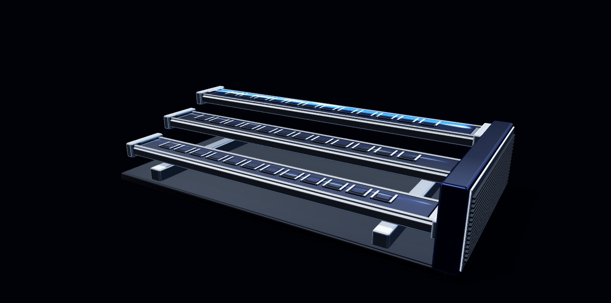

Workload traffic
Identify when each workload transfers data, and how much it moves.
Accelerate AI
AI computation depends on data moving between systems. AMLI links workload-specific network paths with transmission queues to evaluate how shared infrastructure can make better use of compute.
AMLI · Performance validation in progress
Selected pathTraining → Training queue

Explore the path and queue for each workload.Conceptual model
A view of connection
When training jobs and inference services share infrastructure, their data transfers overlap too. Compute, storage and networking are examined together to understand the contribution of congestion and transmission queues.
Identify when each workload transfers data, and how much it moves.
Map the network paths and queues shared by concurrent workloads.
Choose metrics such as throughput, latency and GPU waiting time to match the operating objective.
Inside the connection
AMLI associates logical workload paths with hardware transmission queues. Its architecture brings job lifecycles and the traffic needs of training and inference into network resource management.
Distinguish the communication needs of training, inference and data transfer.
Define the routing domain and VRF for a workload.
Associate the logical path with a hardware queue in the switch.
Measure changes in data movement and compute waiting time together.
Conceptual VRF-to-queue association. Support and performance effects are evaluated for each configuration.
Define communication paths by workload to manage traffic in concurrent environments.
Define transmission behaviour around the switch’s queue capabilities and mapping options.
Manage path and queue resources around the start and completion of a job.
Account separately for the latency requirements of inference traffic.
Where to begin
Multiple training jobs use the same network.
Training traffic runs alongside latency-sensitive inference.
Connection resources need to follow changing job lifecycles.
A shared process
AMLI performance effects are under validation. Evaluation scope and measurement conditions are defined around the workload and network configuration, then changes are compared before and after application.
Performance validation in progress
Document data sizes, communication patterns and concurrency.
Align switches, topology, queue settings and measurement intervals.
Read throughput, latency and compute waiting time together to assess operational relevance.
Common questions
AMLI operates at the network layer on standard Ethernet. Evaluation scope depends on the switch’s VRF and hardware queue capabilities, topology and workload scale.
GPU details are useful alongside traffic patterns, switch configuration and concurrency. Compute hardware alone does not establish the network’s contribution or the effect of a change.
It examines how workload-specific paths and hardware queue association affect waiting time and throughput on a shared network. Workloads and metrics are defined first so the results can be interpreted in context.
Design the next connection with us
Start with your workload types, network configuration and the operating metrics you want to improve.
Discuss an AMLI evaluation